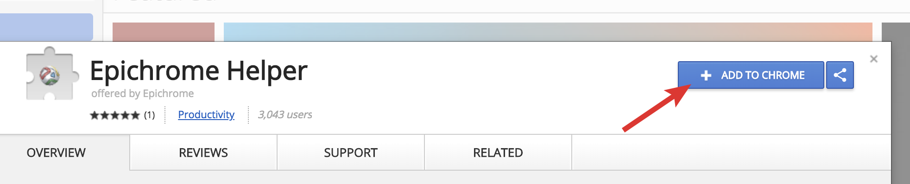

Your new app is almost ready to use, but due to Chrome’s security you need to manually enable the Epichrome Helper extension if you want link redirection and the other features it adds.
The simplest way is to click this link for the Epichrome Helper page at the Chrome Web Store. You should then see an "Enable this item" link at the top of the page:
If for some reason the extension isn't already installed, you can click the "Add to Chrome" button to install it yourself:
Then restart this app and you'll be off and running! If you have any issues, please report them here. Enjoy!